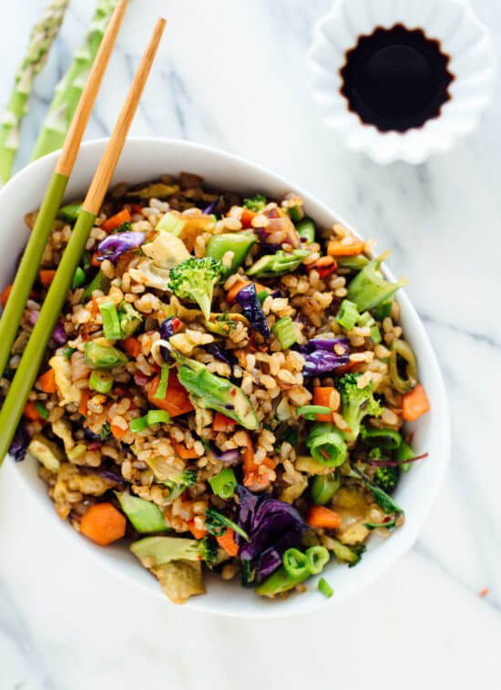

Veggi Fried Rice

Description
A simple, yet satisfying dinner!
Ingredients
- 1 1/2 teaspoons + 2 tablespoons avocado oil or safflower oil, divided
- 2 eggs, whisked together
- 1 small white onion, finely chopped (about 1 cup)
- 2 medium carrots, finely chopped (about 1/2 cup)
- 2 cups additional veggies, cut into very small pieces for quick cooking
(options include snow peas, asparagus, broccoli, cabbage, bell pepper,
and/or fresh or frozen peas—no need to thaw first)
- 1/4 teaspoon salt, more to taste
- 1 tablespoon grated or finely minced fresh ginger
- 2 large cloves garlic, pressed or minced
- Pinch of red pepper flakes
- 2 cups cooked rice (day old rice makes the dish extra crispy!)
- 1 cup greens (optional), such as spinach, baby kale or tatsoi
- 3 green onions, chopped
- 1 tablespoon reduced-sodium tamari or soy sauce
- 1 teaspoon toasted sesame oil
- Chili-garlic sauce or sriracha, for serving (optional)
Steps
- Heat large skillet over medium-high heat. Add 1 and 1/2 teaspoons of oil to pan once hot.
- Add scrambled eggs and cook until soft-scrambled. Remove eggs from pan and set aside.
- Return pan to heat and add 1 tablespoon of oil. Add onion and carrots, cooking until
onions and translucent and carrots are tender.
- Add remaining veggies and salt. Cook veggies until crispy.
- Add rice to pan and season to taste. Letting the rice sit without stirring will create a
crispier end result.
- Garnish with greens and optional sauces.